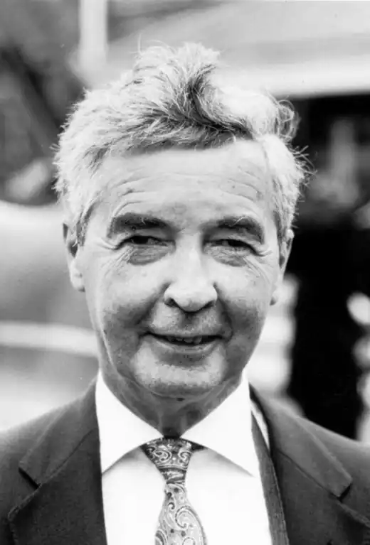

Народився британський письменник Дік Френсіс 31 жовтня 1920 року в Велсі. Жокей її Королівської Величності – не збирався бути письменником та писати свої бестселери. Починаючи з п'яти років, він не міг себе уявити ні ким іншим, окрім як наїзником (жокей – сімейна професія Френсіс. Ними були і батько, і дід письменника). Розлучитися з улюбленою справою змусила війна, Френсіс став військовим льотчиком. Після війни, повернувшись до коней, майбутній письменник бере ряд перемог на провідних змаганнях, всього він брав участь у понад 350 скачок, ставши одним з найбільш успішних повоєнних жокеїв. У березні 1953 року королівський тренер Пітер Казалет запросив Діка брати участь у перегонах і представив його Королеві. Виступи на королівських конях принесло Френсісу міжнародну популярність. 4 березня 1956 на перегонах у Великому національному стипль-чезі відбулася знаменита падіння коня Девон Лох, на якій виступав Дік. Причини падіння (судорога, переляк, мікроінфаркт і т.д.) аналізуються досі, а сам Френсіс після падіння став відомішим багатьох переможців цих змагань.
Зацікавився цією історією літературний агент Джон Джонсон зробив Діку привабливу пропозицію. Він знайшов письменника готового обробити сюжет, а Френсіс повинен був поставити своє ім'я на обкладинці. Подружжя Френсіс погодилися з пропозицією про створення книги, але Мері Френсіс наполягла на тому, що вони напишуть її самостійно. Дік повинен був згадати всі цікаві факти, а Мері, що мала досвід написання оповідань і есе, обробити текст.
У 1956 році Френсіс став спортивним оглядачем у Sunday Express, а в 1957 році вийшла його перша книга – "Спорт Королів". Заробітків від журналістської роботи не вистачало, і в 1960 році Дік і Мері вирішили спробувати удачі в новому жанрі – трилері. Поштовхом до його написання послужив мав місце в дійсності інцидент зі зловмисниками під час одного з кінних змагань. Подружжя працювало разом, спільно складали сюжет, потім Дік писав, а Мері правила. Дік не приховував участі Мері, а друзі-письменники знали про її великої ролі ролі у створенні творів, але Мері не дозволяла ставити своє ім'я на обкладинці. Так був створений роман 1962 року "Фаворит", і таким же чином були написані всі 40 романів. Його манера працювати досить незвичайна: він створює "чорновий" варіант тексту і начитує його на магнітофон, спрощуючи граматичні конструкції і лексику, щоб добитися ефекту розмовної мови. Френсіс проявив себе як чудовий оповідач і психолог. Для нього характерні ретельно виписані сцени насильства і жорстокості, обов'язковий мелодраматизм, наявність моралізаторського резюме. Більшість творів письменника присвячені скачкам, вірніше їх тіньовій стороні. Герої письменника (жокеї або колишні жокеї, як сам письменник, власники коней або просто закохані в цей спорт люди) роблять усе можливе, щоб скачки залишалися гарним і чесним спортом, але не предметом наживи навколоспортивних людей, готових на найжорстокіші злочини. Аранжуванням кримінальних дій служить розгорнута і вельми достовірна інформація про різних професійних сферах ("Фаворит" – перегони, "Останній бар'єр"-розведення коней, "Смертельний рейс" – геологорозвідка, "Відображення" – малюнок, "Гра напевно" – радіо, "Кураж "— психіатрія). Головний герой Френсіса – майже завжди не професіонал дуже негероической зовнішності, яка обов'язково страждає в результаті докладно описаного мордобою. В якості компенсації автор обдаровує своїх героїв загостреним почуттям справедливості, мужністю, інтелектом і … живучістю. Своєрідне поєднання крутого детектива з мелодрамою вельми насторожено сприймається критикою і – забезпечує Діку Френсісу широкий читацький успіх. Твори Френсіса тричі удостоювалися нагороди Едгара По і Золотий кинджал. Він отримав Алмазний кинджал Картьє. Володіє цілою колекцією кинджалів-премій – Срібним, Золотим і Діамантовим. У 1996 році удостоєний найвищого звання серед американських детективних письменників – Grand Master (Гранд-Майстер). Обирався головою Асоціації детективних письменників Великобританії. У 2000 році за заслуги він отримав CBE (Відмінно орден Британської імперії і звання Коммандор). Після смерті Мері у вересні 2000 року, Дік сказав, що Мері "була більше, ніж моєю правою рукою, насправді, вона була обома руками". Він зробив заяву, що більше не напише жодного твору. Але виходить його нова книга "Ніздря в ніздрю" (Dead Heat; 2007), в роботі над якою допомагав його син, а потім ще три спільних романи. Дік Френсіс помер 14 лютого 2010 на Кайманових островах, де жив останні роки. У нього залишилося двоє синів, 5 онуків і один правнук. Видано 41 детективний роман, перекладені понад 20 мовами і продані загальним тиражем понад 60 мільйонів. Про його життя і творчість написано три монографії. Публікація останнього детектива, написаного спільно з сином Феліксом, "Crossfire" (Перестрілка, Перехресний галоп), відбулася восени 2010 року.